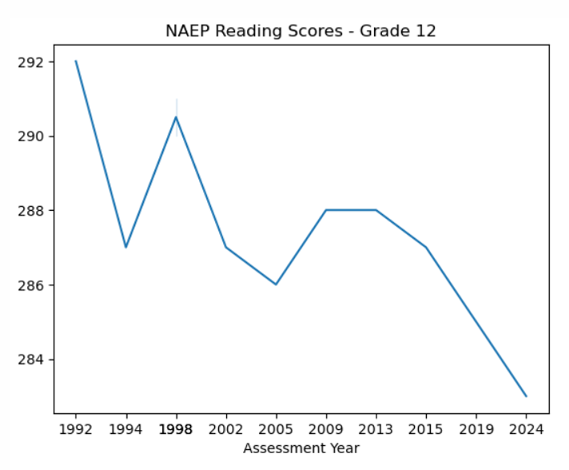

This project assesses the relationship between poverty and literacy in the United Status using linear regression analysis.

In this project, data is examined which reports approximate literacy scores for each county in the U.S., alongside each county's poverty rate. The data also includes other demographic statistics for each county. A linear regression model was created in StatsModels to predict literacy score as a function of several variables, and the model reported a statistically significant relationship between literacy and poverty.
Displayed Skills:
- Programming
- Python
- StatsModels
- Pandas
- Matplotlib
- Seaborn
- End-to-end project pipeline
- Communication of research findings
Visit the links on the right hand side of this webpage to explore the project.